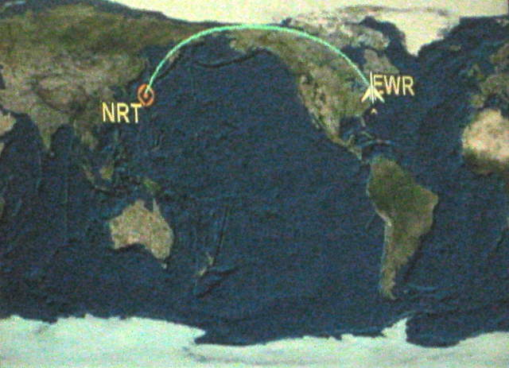
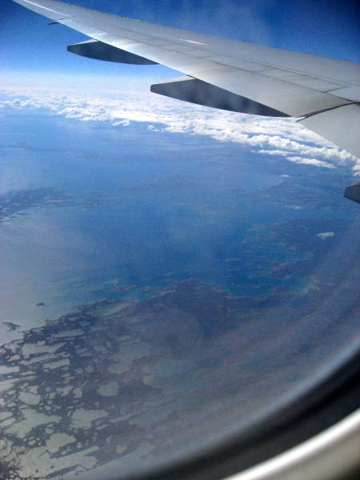
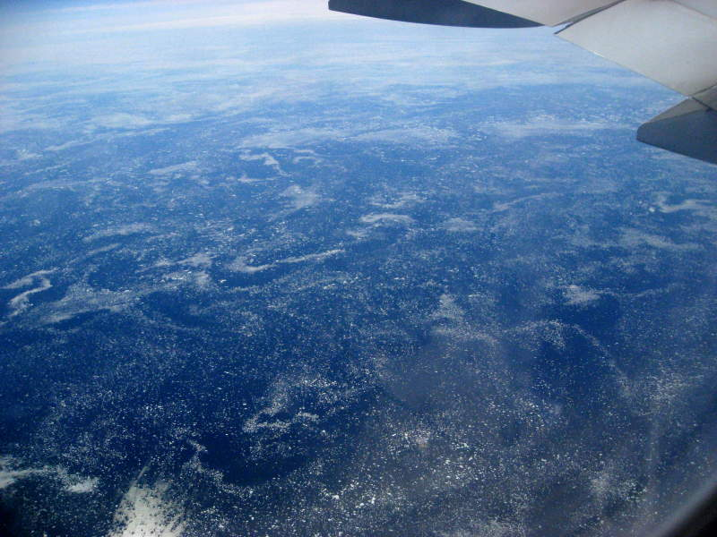
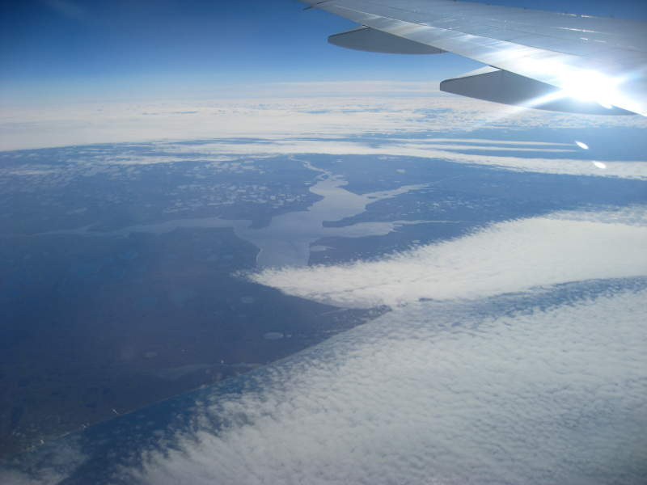
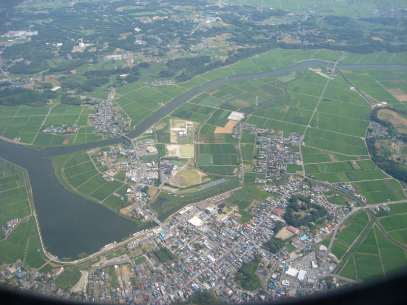
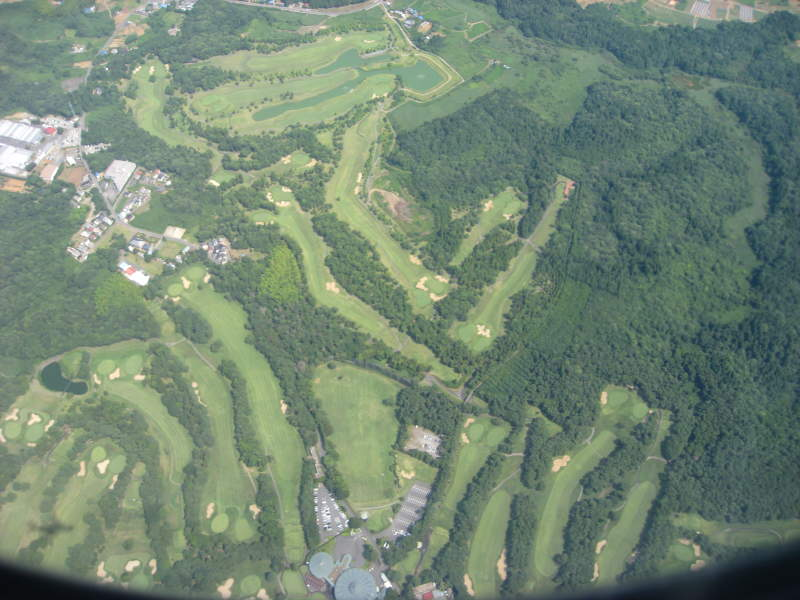

Flight out to Japan
Here's
the video map showing our flight path. It's curved because this
map is a flat projection of an ellipsoidal/egg-shaped world.

On
the flight over, keenly aware we were passing over the artic circle, I
snapped this picture excitedly, thinking the clouds ahead were glaciers
or something.

Ice floes can look cool. These are definitely not clouds.

Water snakes across the land below.

We arrive at Japan. Lots of agriculture going on here.

Here's
something I found strange. We flew over so many golf courses
during our approach to the airport, it was just silly. Here's one
of them.
Back